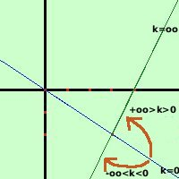

Si puo' definire un fascio di rette come la combinazione lineare di due rette qualunque del fascio (inserire link)
Si puo' definire un fascio di rette come la combinazione lineare di due rette qualunque del fascio (inserire link)Cioe' se ad esempio considero le due rette in forma implicita: 2x + 3y = 0 2x - y - 8 = 0 esse individuano il fascio di rette 2x + 3y + k(2x - y -8) = 0 A destra in blu la prima retta ed in verde la seconda C'e' un piccolo problema: dando dei valori a k possiamo trovare tutte le rette del fascio eccetto la retta 2x - y - 8 = 0, infatti tale retta si otterrebbe per un valore k = allora si puo' procedere in due modi diversi:
Consideriamo ancora il fascio  2x - y -8 = 0 Osserviamo che la retta 2x + 3y si ottiene per k=0 Se diamo dei valori a k in modo ordinato (+1,+2,+3,... oppure -1,-2.-3 ,....) otteniamo altre rette che, partendo dalla prima retta, ruotando attorno al punto di intersezione, si avvicinano alla seconda retta; Ora posso avvicinarmi ad oo sia considerando valori superiori a 0 che valori inferiori: quindi abbiamo 2 possibilita' per le rette di sovrapporsi:
Vediamo ora quali sono i problemi possibili per i fasci di rette |

|

|

|

|